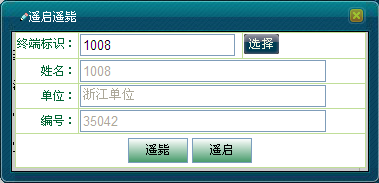
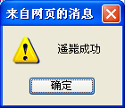
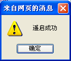

调度台可对网中非法用户实时空中遥毙，被遥毙的终端不能进行任何操作。如果用户被遥毙时未开机，则当其开机登记时还会被自动遥毙。
遥启是遥毙的逆动作，由系统下发恢复命令，被遥毙的移动台收到调度台下达的恢复指令后恢复正常工作状态。如果用户被恢复时未开机，则当其开机登记时将自动恢复集群工作。
 遥启遥毙移动用户的具体操作步骤如下：
遥启遥毙移动用户的具体操作步骤如下：
1）在地图上选中移动用户。
2）单击右键选择［呼叫业务/遥启遥毙］，弹出“遥启遥毙”对话框，如下图1所示。

图1. 遥启遥毙对话框
3）单击＜遥毙＞按钮，遥毙成功后弹出“遥毙成功”提示框，如图2所示。

图2. 遥毙成功
4）若想遥启遥毙的移动用户，则在“遥启遥毙”对话框中单击＜遥启＞按钮，遥启成功后，会提示“遥启成功”，如图3所示。

图3. 遥启成功
Copyright © 2012 Eastcom, Inc. All rights reserved. |
||